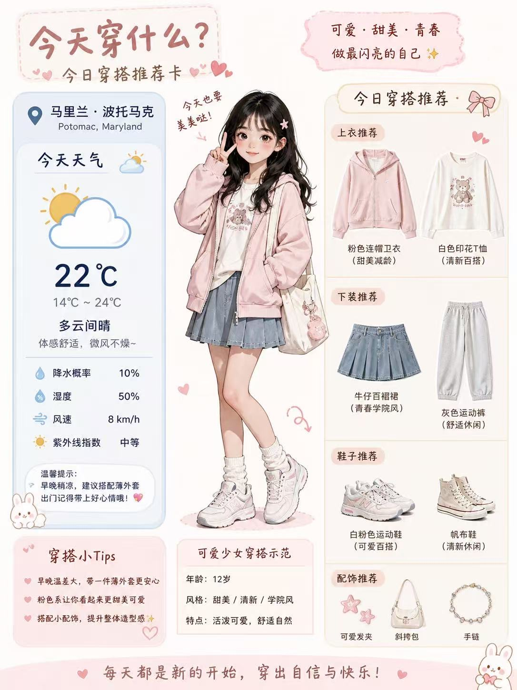
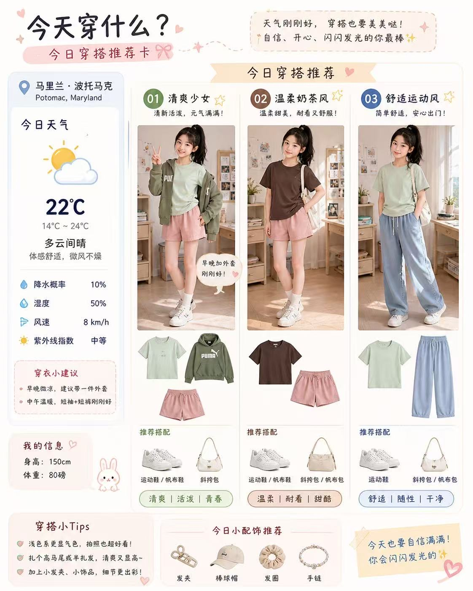
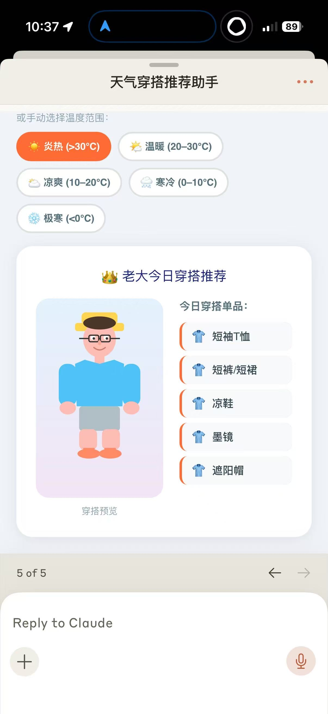

事情是这样的。
某个工作日早晨，面对衣柜发呆五分钟之后，我决定做一个实验：让 AI 帮我决定今天穿什么。
同一个需求——马里兰波托马克，22°C，多云间晴——分别丢给 GPT 和 Claude，看看它们各自交出什么答卷。
结果……我笑了整整一个早上。
GPT 一出手就知道——它不是来帮你选衣服的，它是来帮你做时尚杂志封面的。

不满足于此，我追加了一句「再来几套不同风格的」——

说实话这两张图的信息密度和视觉完成度都很高。如果你把它截图发小红书，不说是 AI 做的，大概率没人看得出来。
GPT 的优势很明显：它能生成图片。从 AI 角色到衣服实物图到整体排版，全部是 DALL-E 一次性渲染出来的。这种「一张图讲完一个故事」的能力，目前 Claude 确实做不到。
同样的需求给到 Claude。它思考了一下，非常认真地……做了一个 App。

让我们仔细欣赏一下这位朋友：圆脑袋、方眼镜、两根面条胳膊、穿着宽松短裤站在虚空中，脸上写满了「你问我穿什么我已经尽力了」。
但你不得不承认——它做的是一个真正能用的工具。温度分档按钮可以点，穿搭推荐根据温度动态变化，你甚至可以把这个 App 嵌到网页里每天用。只不过……视觉上确实让人很难产生「我今天要美美哒」的冲动。
赢在视觉表达。能生成图片是它最大的差异化优势。如果你的需求是「帮我做一张好看的内容卡片」，它现阶段确实更胜一筹。
赢在功能思维。它的第一反应不是画一张漂亮的图，而是做一个可以反复使用的工具。如果你的需求是「帮我做一个每天能用的东西」，它的思路其实更实用。
但那个火柴人……Claude，我们需要谈谈。
下次我打算给 Claude 装一个穿搭 Skill，看看被调教之后能不能从直男进化成「略懂时尚的理工男」。如果真的有用，我一定回来更新。